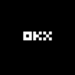

Exchange · registro ESMA a 22/10/2026
¿Está Bitpanda Pro / One Trading autorizado en España?
Sí. Bitpanda Pro / One Trading puede prestar servicios cripto en España
Opera a través de One Trading Exchange B.V. (Países Bajos), que figura en el registro MiCA de ESMA con autorización vigente y España entre sus países de servicio.
Sociedades en el registro 1
Preguntas frecuentes
¿Está Bitpanda Pro / One Trading autorizado en España?
Sí. Según el registro MiCA de ESMA a 22/10/2026, Bitpanda Pro / One Trading opera en la UE a través de One Trading Exchange B.V. (Países Bajos), con autorización vigente y acceso a España. Tipo: Notificación de entidad financiera (Art. 60).
¿Es legal Bitpanda Pro / One Trading en España?
Sí. Bitpanda Pro / One Trading puede prestar servicios de criptoactivos en España: su sociedad One Trading Exchange B.V. figura en el registro MiCA de ESMA a 22/10/2026 con autorización vigente y España entre sus países notificados.
¿Qué es la licencia MiCA?
MiCA es el Reglamento (UE) 2023/1114. Desde el fin del periodo transitorio en España (1 de julio de 2026), para prestar servicios de criptoactivos a residentes en España hay que figurar en el registro MiCA con autorización vigente y España notificada, ya sea con autorización CASP (art. 59) o mediante notificación de una entidad financiera ya supervisada (art. 60).
¿Qué sociedad presta el servicio de Bitpanda Pro / One Trading?
One Trading Exchange B.V., con sede en Países Bajos y supervisada por Netherlands Authority for the Financial Markets (AFM). Tiene España entre 30 países notificados.
¿Cómo compruebo si Bitpanda Pro / One Trading está autorizado?
Busca el nombre jurídico de la sociedad que te presta el servicio (aparece en los términos legales de la app) en el registro MiCA de ESMA y en el listado de la CNMV, y comprueba que la autorización siga vigente y que España figure entre sus países. Este buscador lo hace por ti con datos a 22/10/2026.
¿Necesita Bitpanda Pro / One Trading una licencia de la CNMV?
No una aparte. One Trading Exchange B.V. está autorizada en Países Bajos (Netherlands Authority for the Financial Markets (AFM)) y España figura entre sus países notificados: una autorización MiCA vale en toda la UE y se extiende a otros países mediante notificación (pasaporte europeo). La CNMV publica en su web un listado de proveedores que incluye también a los que operan en España desde otro país.
Más contexto en la guía MiCA para España y en la lista completa de proveedores.
Fuente del mapeo
ESMA CASPS.csv: coincidencia del nombre comercial (ae_commercial_name) o legal (ae_lei_name), revisada a mano. Registro de ESMA a 22/10/2026, comprobado el 24/10/2026.
Comprueba otras marcas
Ver todas →
OKXMalta · Art. 59 · inferidoPuede operar en EspañaBybitAustria · Art. 59Puede operar en EspañaLos cambios del registro, cada lunes
Altas, bajas, retiradas y quién gana o pierde el permiso para operar en España. Un correo, sin ruido.
- Gratis
- Un correo a la semana
- Baja en un clic
Se abre la página de suscripción de Beehiiv en una pestaña nueva: esta web no carga nada de Beehiiv ni recoge tu correo. Allí Beehiiv trata tu dirección como encargado del tratamiento. Más información en la política de privacidad.